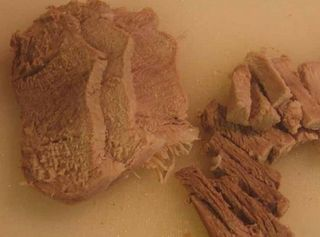
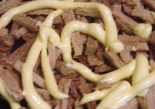
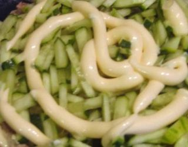
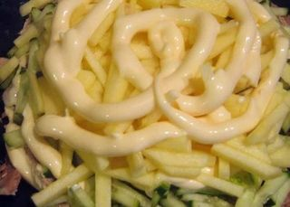

Шаг 1: Готовим салатик Идиллия.
Первым делом ставим варить мясо. Так как его несильно много, то свариться оно быстро минут 30 (если только у вас не говядина, так как она вариться немого дольше). Не забываем посолить.
В это время в неглубокой миске взбиваем при помощи венчика яйца, солим и перчим.

Ставим на средний огонь разогреваться сковороду, предварительно налив растительное масло, после чего выливаем содержимое миски и жарим с двух сторон яичный блинчик, который потом нарежем соломкой.
Готовое холодное мясо, яблоки (заранее очищенные) и огурцы нарезаем несильно толстой соломкой.
Чеснок очистить и перепустить через чесночницу.
Готовить салат будем слоями.

Берём сервировочное блюдо и первым слоем выкладываем отваренное мясо и смазываем майонезом.

Второй слой – огурцы, слегка посоленные и смазанные майонезом.

Третий слой – яблоки, политые майонезом.
И, наконец, пятым слоем – яичный блинчик.
Посыпаем сверху чесноком и украшаем листьями зелени.